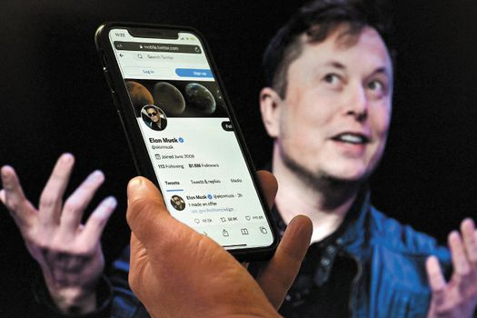

idea principal: Elon Musk hace algunos meses planteo publicamente comprar twitter para que su empresa registrada Tesla pudiera ganar popularidad en zonas donde este no tiene popularidad, pero debido a que este logro darse cuenta de que el algoritmo de twitter es algo desconocido para el asi como sus conocimientos basicos de esta, cancelo todo lo cual lo dejo en una incomoda posicion en como evadir a twitter, pero luego de varios arreglos twitter cancelo la compra y fue perdiendo popularidad de manera rapida.resumen: Lo que se avecina es una batalla legal, en la que puede que no haya ganadores claros y que no sería lo mejor para el futuro de la compañía, Después de meses de mensajes cruzados y desencuentros, todos muy públicos, entre Elon Musk y Twitter pasó lo que algunos dijeron que iba a pasar desde el principio: la compañía quedó un poco a la deriva luego de que el hombre más rico del mundo comenzara a bajarse del caballo de comprar la red social. O al menos a intentarlo. Primero, una recapitulación rápida: en abril de este año, la junta directiva de Twitter aceptó una oferta de compra del total de sus acciones (que se negocian públicamente en la bolsa) por parte de Musk. El trato establecía un precio de US$54,20 por acción, lo que equivale a unos US$44.000 millones. De cerrarse la transacción, la red social pasaría a ser una compañía privada.bibliografia: https://www.elespectador.com/tecnologia/la-mala-hora-de-twitter/
Nombre: Thomas Alejandro Vargas Blanco
Curso: 11°